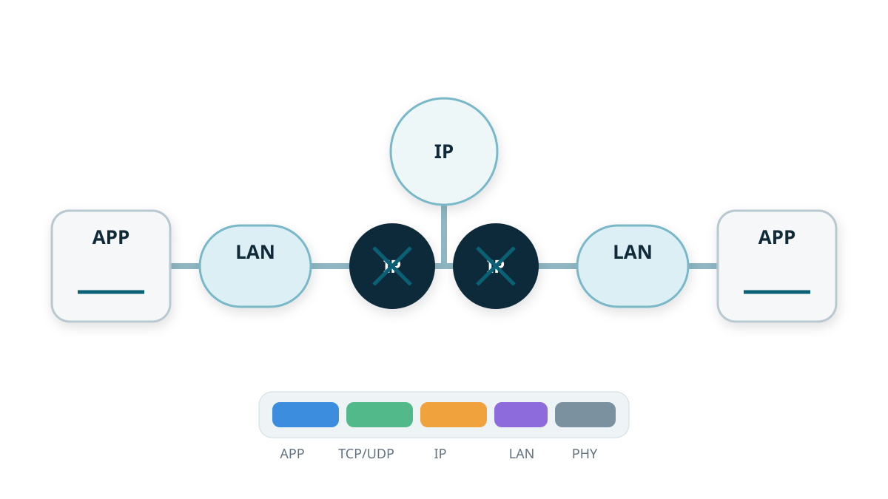

Capítulo 1 · Arquitectura de Internet
Parte I — De señales a redes locales
¿Qué sucede realmente entre la acción de una aplicación y un servicio remoto en Internet?

Por qué importa este capítulo
Sección titulada «Por qué importa este capítulo»Un navegador puede cargar una página en una fracción de segundo, pero esa aparente simplicidad oculta varios sistemas que cooperan: una aplicación, el sistema operativo, una red local, uno o más routers, otras redes administradas de forma independiente y un servicio remoto. La habilidad importante no es memorizar nombres de protocolos. Es aprender a preguntar qué componente actúa, qué estado utiliza y qué evidencia permite observarlo.
Este capítulo establece el modelo que reutilizaremos a lo largo del resto del libro.
Deténgase y prediga. Escriba
https://example.com/en un navegador. Antes de continuar, enumere al menos cuatro sistemas o mecanismos de protocolo que pueden intervenir antes de que aparezca el primer byte de la respuesta.
1. Una acción de aplicación atraviesa muchos límites
Sección titulada «1. Una acción de aplicación atraviesa muchos límites»Una primera aproximación útil es:
aplicación
↓
API de red del sistema operativo
↓
estado de transporte
↓
reenvío IP
↓
enlace local
↓
routers y otros enlaces
↓
host remoto
↓
aplicación remotaNingún componente necesita comprender el intercambio completo. La aplicación no tiene que saber cómo Ethernet codifica una trama. Un router normalmente no necesita saber qué elemento HTML producirá una solicitud. El servidor remoto no necesita una copia de la tabla de reenvío de cada router intermedio.
Esta separación es una de las razones por las que Internet puede escalar: los componentes cooperan mediante interfaces y contratos de protocolo, no mediante una implementación global compartida.
2. La conmutación de paquetes cambia reserva por compartición
Sección titulada «2. La conmutación de paquetes cambia reserva por compartición»El tráfico de Internet se divide en paquetes que comparten los enlaces a lo largo del tiempo. Normalmente no se reserva capacidad de forma permanente para cada aplicación antes de permitirle transmitir.
Si un enlace de salida de 1 Gb/s está libre, un solo flujo puede utilizar gran parte de su capacidad. Si muchos flujos se activan al mismo tiempo, sus paquetes compiten por una tasa de servicio finita. De ahí aparecen tres efectos recurrentes:
- retardo de cola mientras los paquetes esperan para transmitirse,
- pérdida cuando se agotan los buffers u otros recursos,
- rendimiento variable porque el tráfico competidor cambia con el tiempo.
La conmutación de paquetes permite compartir muy bien la capacidad, pero no garantiza latencia constante.
Deténgase y prediga. Dos aplicaciones comparten el mismo enlace de salida. ¿Debe la red reservar exactamente la mitad para cada una antes de que cualquiera pueda transmitir? ¿Qué cambia si ambas envían a máxima velocidad al mismo tiempo?
M02 cuantificará propagación, serialización, colas, throughput y producto ancho de banda-retardo. M09 estudiará cómo reaccionan los extremos cuando la capacidad compartida se congestiona.
3. Las capas son contratos, no cajas independientes
Sección titulada «3. Las capas son contratos, no cajas independientes»La estratificación funciona cuando una capa ofrece un servicio mediante una interfaz más simple que los detalles necesarios para implementarlo.
Un programa puede utilizar un socket sin decidir cómo Wi-Fi o Ethernet representan los bits. IP puede transportar paquetes sobre muchas tecnologías de enlace. Los protocolos de transporte pueden ofrecer comunicación entre procesos sin obligar a las aplicaciones a implementar el enrutamiento.
Un modelo compacto es:
aplicación significado: nombres, solicitudes, respuestas
transporte comunicación entre procesos
IP reenvío entre redes heterogéneas
enlace entrega de un salto en el medio actual
físico señales y transmisiónLas capas no son máquinas separadas. Un host normalmente procesa todas ellas. Un router también tiene interfaces, colas, comportamiento de enlace, un sistema operativo o plano de control y, en algunos casos, servicios de aplicación.
La estratificación es una abstracción, no una regla para ignorar las capas inferiores. Problemas de rendimiento, MTU, pérdidas, offloads y límites de seguridad obligan con frecuencia a razonar a través de varias capas.
4. La encapsulación transporta el estado que necesita cada capa
Sección titulada «4. La encapsulación transporta el estado que necesita cada capa»Supongamos que una aplicación produce la carga útil P. Conceptualmente, las capas inferiores la rodean con sus propios metadatos:
aplicación: [ P ]
transporte: [ cabecera transp. | P ]
IP: [ cabecera IP | cabecera transp. | P ]
enlace: [ cabecera enlace | cabecera IP | cabecera transp. | P | tráiler ]Las cabeceras no son simples etiquetas. Contienen información utilizada por una capa concreta: puertos, números de secuencia, direcciones de red, límites de saltos, identificadores de protocolo, sumas de verificación y otros estados.
Una consecuencia importante es que no todos los dispositivos necesitan inspeccionar todas las cabeceras. El reenvío IP básico utiliza información de la capa de red. Un router normal no necesita interpretar un método HTTP para elegir el siguiente salto.
Cuando un paquete pasa de un enlace a otro, la trama local puede cambiar aunque el paquete IP lógico continúe hacia el mismo extremo remoto.
Ejemplo resuelto. Un paquete cruza cinco routers entre dos hosts conectados mediante Ethernet. Las direcciones IP de origen y destino normalmente se conservan extremo a extremo, mientras que cada salto Ethernet puede utilizar una pareja distinta de direcciones. Por eso la dirección MAC de un servidor remoto de Internet suele ser irrelevante para su host local.
5. Internet es una red de redes
Sección titulada «5. Internet es una red de redes»La palabra Internet es literal: es una interred. Miles de redes administradas de forma independiente cooperan mediante protocolos comunes.
Conviene distinguir:
- Host: máquina que ejecuta aplicaciones de extremo y una pila de red.
- Enlace: dominio de comunicación o salto entre interfaces.
- Conmutador (switch): dispositivo que normalmente reenvía tramas dentro de un dominio de enlace.
- Router: dispositivo que reenvía paquetes IP entre redes.
- Sistema Autónomo (AS): conjunto de redes bajo una política común de administración y enrutamiento.
- Servicio: funcionalidad de aplicación que puede estar replicada en muchos hosts, regiones o proveedores.
Una ruta puede atravesar una red doméstica o universitaria, un proveedor de acceso, proveedores de tránsito, puntos de intercambio de Internet y la red de un proveedor de contenidos. Esas organizaciones no comparten una única configuración global de routers. Interoperan porque acuerdan un comportamiento común de los protocolos.
La estructura administrativa importa
Sección titulada «La estructura administrativa importa»La ruta físicamente más corta no siempre es la ruta seleccionada por Internet. Las relaciones comerciales, la política, los fallos, la capacidad y la ingeniería de tráfico influyen en el enrutamiento. M07 desarrolla esta idea con BGP.
6. La cintura estrecha permite evolucionar por encima y por debajo
Sección titulada «6. La cintura estrecha permite evolucionar por encima y por debajo»La arquitectura de Internet suele representarse como un reloj de arena:
muchas aplicaciones
↓
opciones de transporte
↓
IP
↓
muchas tecnologías de enlaceIP es la capa común estrecha. Muchas aplicaciones pueden utilizarla por encima y muchas tecnologías de enlace pueden transportarla por debajo.
Este diseño reduce la coordinación necesaria. Una nueva aplicación no exige que todos los switches Ethernet, redes Wi-Fi, enlaces de fibra o sistemas de radio comprendan su semántica. De forma similar, una nueva tecnología de enlace puede transportar aplicaciones IP existentes sin rediseñarlas.
La contrapartida es un minimalismo intencional: la capa de red no intenta proporcionar todas las propiedades que una aplicación podría desear.
7. El estado debe residir donde exista suficiente información
Sección titulada «7. El estado debe residir donde exista suficiente información»El argumento extremo a extremo pregunta dónde puede implementarse una función de forma completa y correcta.
Imagine que una capa inferior de red promete una transferencia “confiable”. ¿Puede el emisor concluir que un archivo ya está correcto en el disco del receptor? No necesariamente. La corrupción podría ocurrir antes de transmitir, después de recibir, en el almacenamiento o dentro de la aplicación. Solo los extremos poseen el contexto suficiente para verificar el resultado final a nivel de aplicación.
Esto no significa que “la red no deba hacer nada”. Las capas inferiores pueden ofrecer retransmisión, checksums, control de congestión, reenvío, filtrado y muchos otros mecanismos útiles. El principio se refiere a dónde puede establecerse la corrección final.
Ejemplos que finalmente requieren conocimiento del extremo incluyen:
- integridad a nivel de aplicación,
- semántica de autenticación y cifrado,
- determinar si un reintento es seguro,
- comprobar si una transacción realmente terminó.
Esta idea reaparecerá en transporte, TLS, sistemas distribuidos, reintentos y replicación.
8. El estado de control y el estado de reenvío cumplen funciones distintas
Sección titulada «8. El estado de control y el estado de reenvío cumplen funciones distintas»Otra separación útil es entre plano de control y plano de datos.
El plano de control aprende o calcula información como las rutas. El plano de datos utiliza el estado de reenvío instalado para procesar paquetes rápidamente.
Conceptualmente:
información de enrutamiento / política
↓
plano de control
↓
tabla de reenvío
↓
plano de datos
↓
siguiente saltoOSPF, BGP, la configuración estática o un controlador definido por software pueden influir en el estado de reenvío. El reenvío de paquetes utiliza después esa tabla repetidamente para procesar paquetes individuales.
Separar ambos papeles ayuda a entender por qué un router puede continuar reenviando tráfico con una tabla existente mientras los protocolos de enrutamiento siguen intercambiando información de control.
9. Siga un intercambio real utilizando evidencia
Sección titulada «9. Siga un intercambio real utilizando evidencia»Supongamos que el usuario solicita https://example.com/. Una cronología útil para diagnosticar el sistema no es “Internet hizo algo”, sino una secuencia de decisiones observables.
Paso 1 — obtener un destino
Sección titulada «Paso 1 — obtener un destino»El resolver necesita una dirección para el nombre, salvo que exista una respuesta válida en caché.
dig example.comEsto muestra información de DNS. No revela la futura ruta de reenvío a través de todos los routers.
Paso 2 — elegir una ruta local
Sección titulada «Paso 2 — elegir una ruta local»El kernel decide cómo alcanzar el destino, con frecuencia mediante una puerta de enlace predeterminada.
ip route
ip route get <destination-IP>Esto es evidencia del estado de enrutamiento local.
Paso 3 — alcanzar el siguiente salto en el enlace local
Sección titulada «Paso 3 — alcanzar el siguiente salto en el enlace local»En una LAN tipo Ethernet, el host normalmente necesita una dirección de enlace para el siguiente salto, no para el servidor remoto de Internet.
ip neighPaso 4 — crear estado de transporte en los extremos
Sección titulada «Paso 4 — crear estado de transporte en los extremos»La aplicación abre estado de transporte y, para HTTPS, se negocian encima los protocolos de seguridad y aplicación necesarios.
ss -tn
curl -v https://example.com/Paso 5 — reenviar entre redes
Sección titulada «Paso 5 — reenviar entre redes»Los routers reciben el paquete por una interfaz, consultan el estado de reenvío, actualizan la información de vida por saltos y lo emiten hacia otro enlace.
traceroute example.comtraceroute proporciona evidencia indirecta, visible desde el extremo, acerca de partes del camino. No es una copia remota del estado interno de cada router.
Paso 6 — correlacionar con evidencia de paquetes
Sección titulada «Paso 6 — correlacionar con evidencia de paquetes»Una captura puede mostrar los bytes visibles en el punto de captura, tiempos, direcciones, puertos, flags y estructura de protocolos.
sudo tcpdump -ni any host <destination-IP>Una captura tampoco puede mostrar automáticamente memoria de aplicación que nunca fue transmitida, las tablas de todos los routers ni texto plano cifrado para el cual el observador no dispone de claves.
Regla práctica de razonamiento: pregunte primero qué pregunta intento responder. Después elija una evidencia que tenga autoridad sobre esa pregunta.
10. Los fallos se vuelven más manejables cuando se identifica el límite
Sección titulada «10. Los fallos se vuelven más manejables cuando se identifica el límite»Un único mensaje como “el sitio web no funciona” puede describir fallos completamente diferentes.
| Límite | Síntoma de ejemplo | Primera evidencia útil |
|---|---|---|
| Nombres | el hostname no resuelve | dig |
| Enrutamiento local | no existe ruta al destino | ip route get |
| Enlace local / vecino | no se alcanza la puerta de enlace | ip neigh, captura |
| Transporte | puerto cerrado, filtrado o handshake fallido | ss, nc, captura |
| Seguridad | falla el certificado o la negociación TLS | curl -v, diagnósticos TLS |
| Aplicación | el servidor devuelve un error | respuesta HTTP/de aplicación |
La tabla está ordenada intencionalmente desde las dependencias cercanas al host hacia la semántica de aplicación. M13 convertirá esta idea en un método sistemático de diagnóstico.
Síntesis resuelta — una solicitud, tres ámbitos de direccionamiento distintos
Sección titulada «Síntesis resuelta — una solicitud, tres ámbitos de direccionamiento distintos»Suponga que un cliente 10.0.0.10:53000 envía una solicitud HTTP al servidor 198.51.100.20:80 mediante su router por defecto. En el primer enlace Ethernet, una vista simplificada es:
aplicación: bytes de la solicitud HTTP
transporte: 10.0.0.10:53000 → 198.51.100.20:80
IP: 10.0.0.10 → 198.51.100.20, TTL 64
Ethernet: MAC-cliente → MAC-izquierda-routerDespués de que el router reenvía el paquete por otro enlace Ethernet, los bytes de aplicación, los extremos de transporte y los extremos IP siguen describiendo el mismo intercambio de extremo a extremo, mientras cambian el encapsulado local y la vida por saltos:
IP: 10.0.0.10 → 198.51.100.20, TTL 63
Ethernet: MAC-derecha-router → MAC-siguiente-saltoEsta transición muestra por qué “destino” no es un único campo universal. El destino de transporte identifica un servicio en un extremo, el destino IP identifica el host usado para reenvío entre redes y el destino Ethernet identifica solo al siguiente receptor del enlace local actual. El router participa en la entrega sin convertirse en el extremo de la aplicación.
Resumen del capítulo
Sección titulada «Resumen del capítulo»Internet funciona porque componentes implementados de forma independiente cooperan mediante contratos estrechos.
Mantenga estas ideas en su modelo mental:
- La conmutación de paquetes comparte capacidad, lo que produce colas, retardo variable y posible pérdida.
- Las capas separan responsabilidades, mientras la encapsulación transporta el estado que necesita cada una.
- La entrega de enlace es local; el reenvío IP atraviesa redes. Los identificadores de enlace pueden cambiar en cada salto.
- Internet está administrativamente distribuida. Routers y sistemas autónomos no pertenecen a un único operador global.
- IP es la cintura estrecha que conecta muchas aplicaciones con muchas tecnologías de enlace.
- La corrección final suele pertenecer a los extremos, donde existe el contexto de aplicación.
- La evidencia tiene alcance. Una tabla de rutas, una caché de vecinos, una captura, una consulta DNS y una respuesta de aplicación contestan preguntas diferentes.
Antes de continuar, explique el recorrido de una solicitud web sin utilizar la frase “la red se encarga”. Nombre las máquinas, el estado importante y la evidencia que inspeccionaría en cada etapa.
Conexiones de sistemas
Sección titulada «Conexiones de sistemas»Sockets, tablas de rutas, cachés de vecinos, interfaces, estado de transporte, colas y reglas de firewall son estado del sistema operativo aunque las bibliotecas lo oculten.
NICs, DMA, interrupciones, offloads, planificación de CPU y movimiento de memoria implementan el límite entre host y red.
La gestión de nombres, RPC, replicación, reintentos y descubrimiento de servicios dependen de lo que la red realmente garantiza y de lo que no garantiza.
Los límites entre capas también son límites de confianza. El cifrado impide intencionalmente que algunos intermediarios interpreten la semántica de aplicación.
La compartición de paquetes, longitud de la ruta, serialización, colas, pérdidas y RTT determinan cómo se comportan las abstracciones en el tiempo.
Autocomprobación
Sección titulada «Autocomprobación»Sin volver a leer el capítulo, responda:
- ¿Por qué un router puede reenviar una solicitud web sin conocer su método HTTP?
- ¿Por qué el destino Ethernet del primer salto suele ser la puerta de enlace y no el servidor remoto?
- ¿Por qué la conmutación de paquetes puede conseguir alta utilización y, al mismo tiempo, producir retardo variable?
- ¿Qué permite la cintura estrecha de IP?
- Mencione una función que necesite verificación final en los extremos y explique por qué.
- ¿Qué herramientas locales utilizaría para inspeccionar DNS, rutas, vecinos, transporte y paquetes?
Después continúe con el laboratorio M01 de intercambio anotado.
Práctica guiada
Sección titulada «Práctica guiada»Tiempo: 8–10 minutos
Materiales: papel o un editor de texto; no requiere acceso a Internet
Predicción
Sección titulada «Predicción»Un navegador envía una solicitud HTTP a un servidor que está en otra red IP. Antes de leer el ejemplo, decida qué campos espera que permanezcan de extremo a extremo y cuáles pueden cambiar en un router:
- bytes de la aplicación;
- puertos de transporte;
- direcciones IP de origen y destino;
- direcciones MAC Ethernet de origen y destino;
- TTL/Hop Limit de IP.
Escriba igual, puede cambiar o debe cambiar junto a cada elemento.
Ejemplo resuelto
Sección titulada «Ejemplo resuelto»Considere esta ruta simplificada:
cliente H1 ── Ethernet ── router R1 ── Ethernet ── servidor H2H1 crea bytes de aplicación, los entrega a transporte, coloca la unidad de transporte dentro de un paquete IP y coloca ese paquete dentro de una trama del enlace local. R1 elimina el encapsulado de enlace entrante, toma una decisión de reenvío IP, disminuye TTL/Hop Limit y crea un nuevo encapsulado de enlace para el siguiente tramo.
La separación importante es que el paquete IP ofrece la abstracción de interconexión, mientras que las direcciones Ethernet solo tienen sentido en cada enlace local. El router reenvía el paquete; no se convierte en el extremo de la conversación de aplicación.
Microexperimento guiado
Sección titulada «Microexperimento guiado»Construya una tabla de cuatro filas con las etapas H1 envía, R1 recibe, R1 envía y H2 recibe. Añada columnas para:
- carga útil de aplicación;
- puertos origen/destino de transporte;
- IP origen/destino;
- MAC origen/destino;
- TTL/Hop Limit.
Use este estado inicial:
H1 IP = 10.0.0.10 H2 IP = 10.0.1.20
puerto H1 = 53000 puerto H2 = 80
MAC H1 = AA MAC izquierda R1 = R1L
MAC derecha R1 = R1R MAC H2 = BB
TTL inicial = 64Complete la tabla. En el router mantenga iguales los extremos de transporte e IP, reduzca TTL a 63 y sustituya las direcciones de enlace para el enlace de salida.
Luego responda:
- ¿Por qué se describe a IP como la “cintura estrecha” de Internet en esta ruta?
- ¿Qué estado pertenece a los extremos aunque los routers participen en la entrega?
Evidencia que debe conservar
Sección titulada «Evidencia que debe conservar»Conserve la tabla completa y una frase que distinga encapsulación de reenvío. La frase debe dejar claro que un router puede reemplazar el encapsulado del enlace local sin terminar el intercambio de aplicación de extremo a extremo.
Comprobación de conocimientos
Sección titulada «Comprobación de conocimientos»Responde ante el laboratorio y justifica cada respuesta.
- Un host envía un paquete IP a un control remoto rojo a través de una puerta de enlace predeterminada. ¿Qué destino de capa de enlace debería aparecer normalmente en la primera trama Ethernet: el servidor remoto o la puerta de enlace? ¿Por qué?
- Un enrutador reenvía un paquete a un nuevo enlace Ethernet. ¿Qué información se espera que cambie: direcciones de capa de enlace, direcciones IP, ambas o ninguna bajo reenvío normal?
- Explique un beneficio y un costo de la conmutación de paquetes en comparación con la reserva permanente de capacidad para cada flujo.
- ¿Por qué Internet puede admitir nuevas aplicaciones y nuevas tecnologías de enlace sin que sea necesario que todos los componentes comprendan a los demás?
- Clasifique cada elemento principalmente como aplicación, transporte, red o estado de enlace: nombre de host, puerto TCP, prefijo IP, dirección MAC.
- ¿Qué comando elegirías primero para inspeccionar el estado de la ruta local? ¿Estado vecino? ¿DNS? ¿Establecido TCP sockets?
- Dé un ejemplo de una función para la cual la verificación del punto final sigue siendo necesaria incluso si las capas inferiores brindan asistencia.
- Una captura de paquetes muestra el tráfico cifrado TCP/QUIC. ¿Por qué puede seguir siendo útil incluso cuando el texto plano de la aplicación no está disponible?
Después de responder, complete el cronograma de intercambio M01 anotado y revise las predicciones incorrectas.
Laboratorio obligatorio
Sección titulada «Laboratorio obligatorio»Complete la práctica guiada y la comprobación de conocimientos antes del laboratorio.
Descargar capítulo + laboratorio para estudio sin conexión.
Extraiga el ZIP, lea lesson.md y lab.md, y use assignment/ para los archivos de práctica.
Este laboratorio se basa en observaciones: conserve evidencia reproducible como se describe a continuación. No tiene un evaluador automático.
Este módulo establece el hábito principal del curso: seguir el estado y la evidencia a través de límites en lugar de memorizar un diagrama de pila.
No existe un evaluador de programación artificial para este laboratorio. El trabajo requerido es una investigación reproducible.
Modelo canónico
Sección titulada «Modelo canónico»Lea fixtures/m01-web-exchange.json en el laboratorio descargado. El conjunto de datos proporciona una línea temporal lógica de ocho pasos, desde la resolución de nombres hasta la aplicación remota.
Para cada paso, clasifique:
- qué máquina/dispositivo actúa,
- qué capa de protocolo está implicada principalmente,
- qué estado se lee o cambia,
- qué evidencia podría hacer visible ese estado.
Predecir
Sección titulada «Predecir»Antes de capturar algo, responda:
- ¿Qué direcciones permanecen como extremo a extremo y cuáles cambian salto a salto?
- ¿Un enrutador normalmente procesa el cuerpo de la solicitud remota HTTP?
- ¿Dónde se convierte el nombre de host de destino en una dirección IP?
- ¿Por qué un host puede necesitar una dirección de capa de enlace para su puerta de enlace predeterminada incluso cuando el servidor final está en otro continente?
Observe su sistema
Sección titulada «Observe su sistema»La observación obligatoria es local y no depende de acceso a Internet pública. Inspeccione el estado del host que participaría en un intercambio:
ip address
ip route
ip neigh
ss -tnRegistre qué puede demostrar cada comando y qué no puede demostrar acerca del intercambio canónico.
Extensión conectada opcional
Sección titulada «Extensión conectada opcional»Si dispone de conectividad a Internet y de las herramientas correspondientes, compare el modelo determinista con un intercambio público real:
dig example.com
curl -I https://example.com/
traceroute example.comUtilice Wireshark/TShark o tcpdump si los permisos de captura lo permiten. El comportamiento de Internet pública es una extensión observacional, no un requisito de corrección: rutas, direcciones, tiempos, filtrado y disponibilidad de herramientas pueden variar. No dependa de capturas de pantalla; registre comandos y evidencia textual/PCAP cuando realice la comparación.
Construir una línea de tiempo comentada
Sección titulada «Construir una línea de tiempo comentada»Construya una tabla con al menos estas columnas:
| Paso | Actor | Estado de la aplicación | Estado del transporte | Estado IP | Estado del enlace | Pruebas |
|---|
No todas las celdas deben contener estado. Una parte importante del ejercicio es identificar qué capas/dispositivos no necesitan comprender una determinada información.
Explicar
Sección titulada «Explicar»Responda a la pregunta guía: ¿Qué sucede, en cada límite relevante del sistema, cuando un programa se comunica con otro programa a través de una red?
Identifique explícitamente un ejemplo del principio extremo a extremo y un ejemplo de funcionalidad que necesariamente pertenece dentro de la red.
GitHub Actions no es necesario para este módulo de observación.